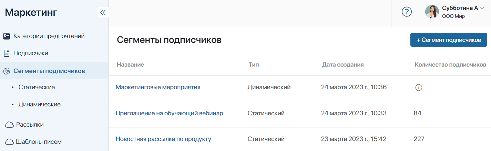
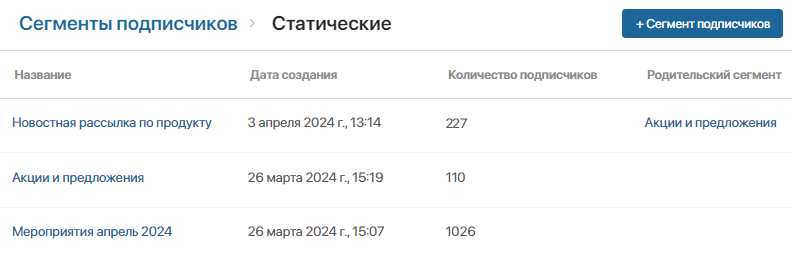
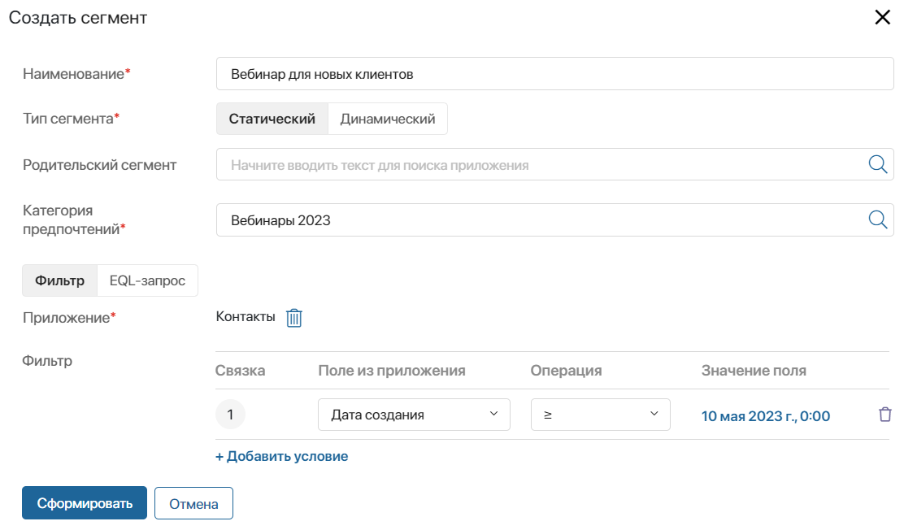
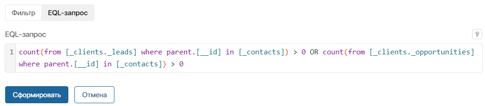
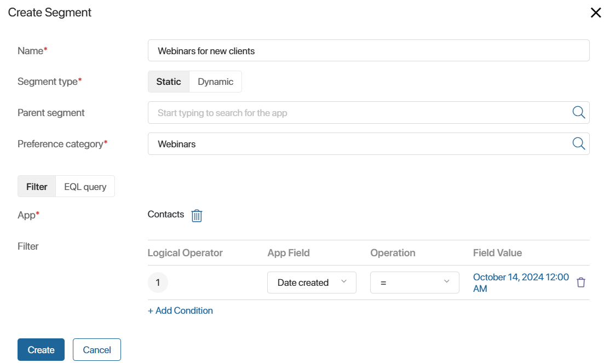
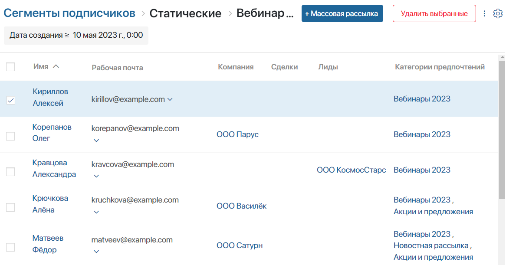

В приложении Сегменты подписчиков доступны настройки для создания сегментов на основе предпочтений клиентов. Это позволяет организовать базу подписчиков и объединить в отдельные сегменты тех клиентов, которые согласились на рассылку и заинтересованы в определённых услугах. Создав сегмент клиентов, вы можете отправлять им целевые предложения и акции только по тем услугам, которые интересны этим клиентам.
Для создания сегментов доступны разные инструменты:
- фильтрация подписчиков на основе контекста выбранного приложения;
- EQL-запрос для отбора подписчиков по свойствам из любых приложений;
- методы API для передачи данных сегмента подписчиков из внешней системы.

Вы можете создавать сегменты двух типов:
- Статические — список подписчиков сохраняется в момент создания сегмента или при его редактировании и не изменяется с течением времени;
- Динамические — при создании сегмента сохраняются только критерии сегментации. Список подписчиков не хранится в системе и формируется каждый раз заново в момент просмотра сегмента или обращения к нему. Это позволяет получить актуальные данные по подписчикам на текущий момент.
На странице приложения Сегменты подписчиков вы увидите все созданные сегменты с указанием их типа. Чтобы просмотреть только сегменты определённого типа, выберите в левом меню нужную папку.
Статические сегменты
Статический сегмент содержит фиксированное количество подписчиков, которое определяется в момент его создания или редактирования. Например, такой сегмент можно использовать для обзвона клиентов. Выгрузите список подписчиков сегмента и приложите к задаче. В системе этот список сохранится и к нему можно обратиться повторно, например, для отправки писем после обзвона.
На странице Сегменты подписчиков > Статические вы увидите дату создания и количество подписчиков по каждому сегменту. Также в таблице отобразятся родительские сегменты, на основе которых созданы новые статические сегменты. Открыв данные статического сегмента, вы можете вручную изменять список подписчиков, добавляя и удаляя записи о контактах.

В качестве статических отобразятся также сегменты, созданные автоматически на основе поведения подписчиков, которым выполнены массовые рассылки: Открытые, Неоткрытые, Клики и Без кликов. Вы можете использовать эти сегменты для новых целевых массовых рассылок. Например, отправьте повторные письма клиентам, которые не открыли предыдущие сообщения.
Обратите внимание, если сегмент сформирован во внешней системе, его можно получить с помощью методов API только в качестве статического сегмента.
Динамические сегменты
Список подписчиков такого сегмента не хранится в системе и формируется каждый раз заново на основе заданных в нём параметров сегментации. Это позволяет получить актуальные данные на момент просмотра сегмента или обращения к нему. Например, при создании сегмента в соответствии с заданным фильтром, в нём было 100 подписчиков. Им вы отправили письма с акциями. В течение недели добавилось 30 новых подписчиков в соответствии с фильтром сегмента. Если через неделю вновь сделать рассылку по этому сегменту, письма будут отправлены 130 подписчикам.
В отличие от статического сегмента, список подписчиков в динамическом сегменте нельзя отредактировать вручную. Также есть ограничения при использовании методов API.
Просмотреть все динамические сегменты можно на странице Сегменты подписчиков > Динамические.
Чтобы отобразить список подписчиков динамического сегмента на текущий момент, нажмите на его название. Вы можете актуализировать данные списка, нажав кнопку Обновить в правом верхнем углу страницы.
Добавить сегмент
Вы можете создать сегмент любого типа. Для этого в приложении Сегменты подписчиков на любой странице в правом верхнем углу страницы нажмите +Сегмент подписчиков. В открывшемся окне заполните поля.
Набор полей в окне создания сегмента может быть разным.
На странице Сегменты подписчиков можно перейти к созданию сегмента любого типа и выбрать его в поле Тип сегмента*. На странице Сегменты подписчиков > Статические или Сегменты подписчиков > Динамические можно создать только сегмент соответствующего типа, который по умолчанию задан в поле Тип сегмента*. |

- Наименование* — задайте название сегмента;
- Тип сегмента* — выберите тип, сегмент которого вы хотите создать;
- Родительский сегмент — поле отобразится только для статического сегмента. Позволяет создать новый статический сегмент на основе существующего. Тогда поля Категория предпочтений* и Приложение* заполнятся автоматически;
- Категория предпочтений* — выберите категорию для рассылки.
Далее выберите способ сегментации подписчиков, Фильтр или EQL-запрос.
Опция Фильтр позволяет задать критерии отбора подписчиков, используя контекст одного приложения:
Вы можете создать новый параметр для фильтрации. Для этого нажмите +Добавить условие. Чтобы удалить условие, нажмите значок корзины. |
Опция EQL-запрос позволяет задать критерии отбора подписчиков, используя контекст любых приложений (системных, пользовательских и входящих в состав бизнес-решений).
В появившемся ниже поле введите текст EQL-запроса. Если он составлен неверно, ниже вы увидите сообщение с указанием ошибки. Подробнее о правилах создания такого запроса читайте в статье «Синтаксис EQL-запроса».

|
Сохраните настройки. После этого откроется окно с информацией о сегменте по заданным параметрам.
В таблице вы увидите заданные поля приложения и установленные для них условия или отметку EQL-запрос. Справа отображаются результаты фильтрации подписчиков: 
|
Если итоговое количество подписчиков не удовлетворяет вашим требованиям, нажмите кнопку Назад и измените параметры фильтрации. Чтобы сохранить новый сегмент, нажмите Далее.
Обратите внимание, в статическом сегменте обязательно должны быть подписчики. Динамический может быть пустым. Позже в него добавятся клиенты, подходящие под заданные условия.
После создания сегмент добавится в приложение Сегменты подписчиков и на страницу со списком сегментов соответствующего типа.
Также можно создать сегмент, получив данные из внешней системы с помощью методов API.
Действия с сегментом подписчиков
Чтобы открыть список подписчиков сегмента, нажмите на его название.
В статическом сегменте список будет постоянным с момента его создания или редактирования.
В динамическом сегменте список сформируется в момент его просмотра. Вы можете актуализировать данные по динамическому сегменту, нажав кнопку Обновить в правом верхнем углу страницы.
По умолчанию в таблице доступна подробная информация о каждом подписчике: имя контакта, компания, должность, рабочий телефон и рабочая почта. Вы можете дополнительно отобразить в таблице любые данные контактов, например, добавить связанные лиды, сделки и категории предпочтений. Для этого в правом верхнем углу страницы нажмите значок шестерёнки и выберите Настройка таблицы.
Под заголовком таблицы можно просмотреть условия, заданные для формирования сегмента.

На странице статического сегмента можно вручную отредактировать список подписчиков, удалив одного или сразу нескольких. Для этого отметьте пользователей флажком и в правом верхнем углу нажмите кнопку Удалить выбранные. Для динамического сегмента такая функция не предусмотрена, т. к. список подписчиков в нём не сохраняется и формируется по заданным критериям в момент обращения к сегменту.
Если сегмент любого типа готов, вы можете перейти к созданию массовой рассылки. Для этого вверху страницы нажмите +Массовая рассылка.
В поставке On-Premises вы можете также создать триггерную рассылку. Для этого перейдите в приложение Карты коммуникаций.
Нажав в правом верхнем углу значок три точки, можно перейти к следующим действиям:
- Экспорт — выгрузить информацию о подписчикахов в файл формата .xlsx. При этом будут экспортированы данные из колонок таблицы, которые отображаются на странице. Вы можете предварительно изменить набор колонок в настройках таблицы;
- Редактировать сегмент — изменить данные, указанные при создании сегмента. Если по сегменту создавалась рассылка, отобразится окно с предупреждением, в котором подвердите действие;
- Копировать сегмент — создать новый сегмент, используя копию существующего. В открывшемся окне укажите название нового сегмента. Остальные данные и список подписчиков скопируются. Новый сегмент добавится на странице приложения Сегменты подписчиков;
- Удалить сегмент — доступно, если по сегменту не создавалась рассылка и он не используется в карте коммуникаций.
Обратите внимание, администратор системы может ограничить права редактировать и удалять сегменты в настройках доступа к приложению Сегменты подписчиков.